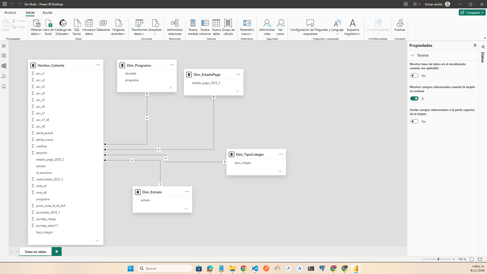

UNIVERSIDAD ANDINA DEL NORTE · COHORTE 2025-1
BI · DEMOSTRADOR
Observatorio de Permanencia
DE LOS DATOS A LA ACCIÓN
Comprender la permanencia.
Comprender la permanencia.
Anticipar la deserción.
Una visión integrada de admisiones, matrícula, actividad académica y acompañamiento estudiantil para convertir los datos institucionales en decisiones oportunas.
85,42%
RETENCIÓN 2025-2
1.025 de 1.200 estudiantes
+ Datos integrados
◎ Alertas tempranas
Alcance y transparencia
Institución y registros sintéticos creados para la actividad.
El tablero usa estadísticas agregadas; la tabla descargable es
anónima y no contiene nombres, documentos ni correos.
PANORAMA EJECUTIVO
Cohorte de ingreso 2025-1 · Seguimiento a 2025-2
La cohorte en cifras
RECORRIDO
Componentes del observatorio
01 / ETL
Calidad y trazabilidad
Limpieza repetible, integración y reglas de transformación.
02 / MODELOModelo dimensional
Granularidad, hechos, dimensiones y medidas.
03 / ARQUITECTURAFlujo de datos
Data Lake, Data Warehouse, capa semántica y consumo.
04 / TABLEROIndicadores interactivos
Filtros por programa, facultad y estrato.
05 / ALERTAIntervención temprana
Comparación de reglas y matriz de confusión.
06 / FUTUROPróxima evolución
Tecnologías, riesgos y estrategias de mitigación.
RETO 01 · EC2
ETL repetible y calidad de datos
El proceso ETL integra las fuentes institucionales, estandariza formatos, elimina inconsistencias y prepara una base analítica para el seguimiento de la permanencia estudiantil.
TRAZABILIDAD
Proceso ETL
Reglas de transformación
| Fuente | Problema | Regla aplicada | Etapa |
|---|---|---|---|
| Admisiones | Nombres con formatos diferentes | Normalización de texto | Limpieza |
| Admisiones | Fechas en distintos formatos | Conversión a formato fecha | Transformación |
| Admisiones | Documentos duplicados | Deduplicación por identificador | Limpieza |
| SIS | Documentos con separadores | Estandarización de identificadores | Limpieza |
| SIS | Variantes de nombres de programas | Homologación con catálogo oficial | Transformación |
| SIS | Periodos y promedios inconsistentes | Normalización de periodo y decimales | Limpieza |
| Moodle | Correos compartidos o desactualizados | Integración mediante código validado | Integración |
| Bienestar | Homónimos y datos sensibles | Validación de identidad y minimización | Privacidad |
| SIS | 13 promedios entre 24 y 43 (fuera de escala 0–5) | Excluir del promedio sin convertir y listarlos aparte | Validación |
| Bienestar | Nombre y observación con datos sensibles | Eliminar ambos y conservar solo identificador y tipo de registro | Anonimización |
Protección de datos:
Los datos sensibles de Bienestar se restringen
y se minimizan antes de su uso analítico.
La página pública no contiene información
individual identificable.
La descarga pública no incluye nombre, documento, correo ni observaciones de Bienestar; el código de estudiante se reemplazó por un identificador anónimo. La reproducción completa del ETL requiere los cinco CSV originales (carpeta de fuentes del curso).
RETO 02 · EC2
Modelo dimensional
El modelo separa los eventos medibles de los atributos descriptivos para facilitar el análisis de la permanencia y evitar duplicaciones en los indicadores.
Granularidad principal:
Una fila por estudiante de la cohorte 2025-1,
con su resultado de matrícula en 2025-2.
La actividad Moodle se conserva en una segunda
tabla con una fila por estudiante y semana.
ESQUEMA LÓGICO
Vista conceptual
Modelo estrella simplificado
Dim_Programa
Programa · Facultad
Dim_Estrato
Estrato socioeconómico
Dim_TipoColegio
Oficial · Privado
Hechos_Cohorte
Estudiante · Matrícula · Deserción · Alertas · Promedio
Dim_Estudiante
Código sustituto · Datos minimizados
Hechos_Actividad
Estudiante · Semana · Accesos · Nota parcial
Dim_EstadoPago
Pagado · Pendiente · Anulado
Dim_Semana
Semana 1–16
Dim_Fecha
Fecha · Periodo · Año

Medidas y agregación
| Medida | Tipo | Agregación |
|---|---|---|
| Matriculado, desertor y alertado | Aditiva | SUM |
| Accesos Moodle y créditos | Aditiva | SUM |
| Promedio académico y Saber 11 | No aditiva | AVG |
| Retención y deserción | Ratio (no aditiva) | Razón de sumas |
| Precisión y cobertura | Ratio (no aditiva) | Razón de sumas |
| Absorción | Ratio (no aditiva) | Razón de sumas (cohorte / admitidos únicos) |
La facultad se deriva del catálogo de programas. Las dimensiones de semana y actividad Moodle se relacionan con el estudiante y la semana correspondiente.
RETO 03 · EC2
Arquitectura del observatorio
Una arquitectura híbrida integra cargas periódicas y eventos de actividad académica, conserva trazabilidad y entrega información gobernada a los usuarios institucionales.
Fuentes
SIS académico
Interna · diaria
Admisiones
Interna · por convocatoria
ERP financiero
Interna · diaria
Moodle
Interna · eventos
Bienestar
Interna · restringida · semanal
Fuentes externas (ICFES Saber 11, MEN/SPADIES)
Externa · anual
→
Integración
ETL por lotes
Python · diario (Bienestar semanal)
Streaming Moodle
Continuo · consolidación diaria
Anonimización de Bienestar
Antes de la zona bronce
→
Almacenamiento
Data Lake
Bronce · Plata · Oro
DW / Lakehouse
Modelo estrella
→
Consumo
Capa semántica
Medidas certificadas
Tablero BI
Autoservicio
Canal de alertas
Correo / Teams
Usuarios por rol
Directivos · Consejeros · Analistas
Frecuencia de cada flujo
| Flujo | Modo | Frecuencia |
|---|---|---|
| SIS → Lake (bronce) | Lotes | Diaria |
| Admisiones → Lake | Lotes | Por convocatoria |
| ERP → Lake | Lotes | Diaria |
| Moodle → Lake | Streaming | Continua (consolidado diario) |
| Bienestar → anonimización → Lake | Lotes | Semanal |
| Fuentes externas → Lake | Lotes | Anual |
| Plata/Oro → DW → capa semántica | Lotes | Diaria |
| Reglas de alerta → canal | Casi tiempo real | Diaria o por evento |
| Capa semántica → tablero | Actualización | Diaria |
Justificación tecnológica
| Componente | Tecnología sugerida | Justificación |
|---|---|---|
| ETL por lotes | Python + pandas / Airflow | Proceso repetible, automatizable y auditable. |
| Streaming | Kafka / Azure Event Hubs | Ingesta de eventos Moodle con baja latencia. |
| Data Lake | S3 / ADLS + Parquet | Almacenamiento por zonas y formatos eficientes. |
| DW / Lakehouse | PostgreSQL / Delta Lake | Consultas analíticas y modelo dimensional. |
| BI | Power BI | Indicadores consistentes y filtros de autoservicio. |
| Alertas | Correo / Teams | Entrega priorizada a los equipos de acompañamiento. |
| Fuentes externas | API / carga por archivo | Enriquece el perfil del estudiante con datos oficiales. |
Seguridad por diseño:
Los datos sensibles de Bienestar se minimizan
y se seudonimizan antes de llegar a la capa analítica
(antes de la zona bronce). El acceso a datos identificables
debe permanecer restringido por rol y fuera del tablero público.
RETO 04 · EC3
Tablero interactivo de permanencia
Selecciona programa, facultad o estrato. Los indicadores y las tablas se recalculan con los grupos agregados de la cohorte. Los filtros se pueden combinar.
COMPARATIVO
Meta ≤ 12%
Deserción por programa
LECTURA DE METAS
Semáforo de gestión
Metas propuestas para el ejercicio: absorción ≥ 80 %, retención ≥ 88 %, deserción ≤ 12 %, promedio ≥ 3,5, alertados ≤ 120, precisión ≥ 40 % y cobertura ≥ 35 %. La meta de 120 alertados aplica a la cohorte completa, no a subconjuntos filtrados. El promedio excluye 13 registros fuera de la escala 0–5 y 25 sin promedio.
DETALLE
Datos agregados
Resultados por programa y estrato
| Programa | Estrato | Cohorte | Retención | Deserción | Promedio | Alertas actuales | Alertas nuevas |
|---|
Los filtros se aplican sobre agregados por programa, facultad y estrato. Las razones se recalculan como cociente de sumas y no como promedio simple de porcentajes.
RETO 05 · EC3
Alerta temprana: de volumen a prioridad
Se compara la regla inicial con una propuesta basada en actividad Moodle y notas parciales de las semanas 1 a 8.
REGLA ACTUAL
371
Estudiantes alertados
Promedio de notas de semanas 4 y 8 menor a 3,0 sobre 5, o cero accesos sumados en semanas 7 y 8.
Precisión 32,61%
Cobertura 69,14%
Regla actual: VP 121 · FP 250 · FN 54 · VN 775.
REGLA PROPUESTA
117
Estudiantes alertados
Al menos tres de cuatro señales de riesgo identificadas durante las semanas 1 a 8.
Precisión 56,41%
Cobertura 37,71%
Cumple capacidad ≤ 120 y cobertura ≥ 35%
REGLA NUEVA
Cuatro señales; se requieren al menos tres
- ≤ 22 Accesos totales acumulados en semanas 1–8.
- ≤ 6 Accesos acumulados en semanas 6–8.
- Menor a 50/100 Promedio de las notas parciales de semanas 4 y 8.
- ≥ 4 semanas Cuatro o más semanas de las ocho con dos accesos o menos.
EVALUACIÓN
Cohorte: 1.200
Matriz de confusión · regla nueva
Desertó
Continuó
Alertó
66
Verdadero positivo
51
Falso positivo
No alertó
109
Falso negativo
974
Verdadero negativo
Precisión = 66 / (66 + 51) = 56,41%. Cobertura = 66 / (66 + 109) = 37,71%. La regla cumple los umbrales de esta cohorte sintética. Debe validarse con otra cohorte antes de su implementación productiva.
RETO 06 · EC3
Prospectiva tecnológica
Tres capacidades para evolucionar desde el reporte descriptivo hacia una gestión anticipada, gobernada y medible de la permanencia.
Streaming de Moodle
Kafka / Event Hubs + Spark- Problema que resuelve
- La alerta por lotes puede llegar tarde para intervenir durante el periodo.
- Indicador que mejoraría
- Cobertura oportuna de alertas y tiempo entre señal e intervención.
- Riesgo
- Costos operativos y falsas alarmas por interrupciones de la plataforma.
- Mitigación
- Piloto en un programa, monitoreo de calidad y ventanas móviles de siete días.
Modelo predictivo de riesgo
Regresión logística / Gradient Boosting- Problema que resuelve
- Una regla fija no ordena los casos por probabilidad ni combina señales flexibles.
- Indicador que mejoraría
- Precisión y cobertura de alertas a capacidad constante.
- Riesgo
- Sesgo por estrato, sobreajuste y falta de explicabilidad.
- Mitigación
- Validación temporal, explicación de variables y auditoría por grupos.
Lakehouse y gobierno de datos
Delta Lake + catálogo- Problema que resuelve
- Fuentes heterogéneas, llaves inconsistentes y presencia de datos sensibles.
- Indicador que mejoraría
- Exactitud, completitud y oportunidad de los indicadores de permanencia.
- Riesgo
- Costo de adopción y exposición de información de Bienestar.
- Mitigación
- Catálogo, linaje, zonas bronce/plata/oro, enmascaramiento y acceso por rol.
FUENTES Y TRAZABILIDAD
Referencias
Referencias técnicas en formato APA 7.
Kimball, R., y Caserta, J. (2004).. Kimball, R., y Caserta, J. (2004). The Data Warehouse ETL Toolkit: Practical Techniques for Extracting, Cleaning, Conforming, and Delivering Data [El kit de herramientas ETL para almacenes de datos: Técnicas prácticas para extraer, limpiar, conformar y entregar datos]. Wiley. www.nibmehub.com www.nibmehub.com.
Zikopoulos, P., Eaton, C., deRoos, D., y Deutsch, T. (2012). Understanding Big Data: Analytics for Enterprise Class Hadoop and Streaming Data [Comprender el Big Data: Analítica para Hadoop y datos en streaming de clase empresarial]. McGraw-Hill. www.personal.utdallas.edu
Few, S. (2013). Information dashboard design: Displaying data for at-a-glance monitoring (2nd ed.). Analytics Press.
Han, J., Pei, J., y Kamber, M. (2012) Data mining: Concepts and techniques [Minería de datos: conceptos y técnicas]. Morgan Kaufmann.
López Romero, M. I. (2023) Diseño de una arquitectura de inteligencia de negocios para apoyar la toma de decisiones en el sector público de Colombia: caso de estudio Antioquia (Trabajo de grado de maestría). Universidad EAN. www.repository.universidadean.edu.co
Inmon, W. H. (2005). Building the data warehouse (4th ed.). Wiley.
Kimball, R., & Ross, M. (2013). The data warehouse toolkit: The definitive guide to dimensional modeling (3rd ed.). Wiley.
Zikopoulos, P., Eaton, C., deRoos, D., y Deutsch, T. (2012) Understanding Big Data: Analytics for Enterprise Class Hadoop and Streaming Data [Comprender el Big Data: analítica para-Hadoop y datos en streaming de clase empresarial]. McGraw-Hill. www.personal.utdallas.edu
Han, J., Pei, J., y Kamber, M. (2012). Data mining: Concepts and techniques [Minería de datos: conceptos y técnicas]. Morgan Kaufmann.
Nota metodológica:
La institución y los datos son ficticios o sintéticos.
Los umbrales del semáforo son metas propuestas para esta actividad.
La absorción se calcula como 1.200 estudiantes de la cohorte
entre 1.450 admitidos únicos (82,76 %).